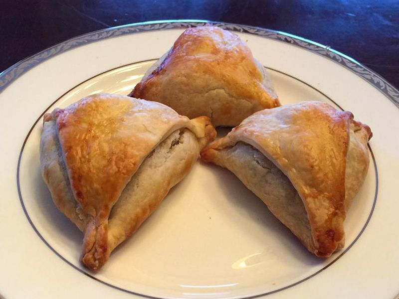

Easy Baked Indian Samosas

Description
Kulfi is a delicious Indian ice cream dessert. I got this simple but delicious recipe for kulfi from my sister-in-law. I have made it several times, and it always gets rave reviews - even the kids love it! Add a few drops of rose water or some ground pistachios for a different flavor.
Ingredients
- 4 potatoes, peeled and cubed
- ¼ cup vegetable oil
- 2 small onions, finely chopped
- 3 tablespoons coriander seed
- 1 tablespoon curry powder
- 1 (1 inch) piece fresh ginger, grated
- 1 teaspoon salt
- 1 teaspoon ground turmeric
- 1 teaspoon ground cumin
- ½ teaspoon ground allspice
- ½ teaspoon cayenne pepper
- ⅛ teaspoon ground cinnamon
- 2 Roma (plum) tomatoes, finely chopped
- ½ cup frozen peas
- 2 (14.1 ounce) packages double-crust pie crusts, thawed
- 2 large egg whites, beaten, or as needed
Steps
- Place potatoes into a large pot and cover with salted water; bring to a boil. Reduce heat to medium-low and simmer until tender, about 20 minutes. Drain and transfer potatoes to a large bowl; mash coarsely, then set aside.
- Preheat the oven to 400 degrees F (200 degrees C).
- Heat oil in a large skillet over medium-high heat; cook and stir onions, coriander seed, curry powder, ginger, salt, turmeric, cumin, allspice, cayenne pepper, and cinnamon in hot oil until onion is lightly browned, about 5 minutes. Remove the skillet from heat and stir in tomatoes and peas. Pour into coarsely mashed potatoes and mix until thoroughly combined. Cool filling completely.
- Cut each pie crust into 8 equal triangles. Spoon filling onto the wide end of each triangle; fold corners over filling to create a triangle-shaped hat. Pinch dough together to form a seal. Brush beaten egg whites over each samosa and arrange on baking sheets.
- Bake in the preheated oven until samosas are golden brown, about 15 minutes.
Back to Home Page